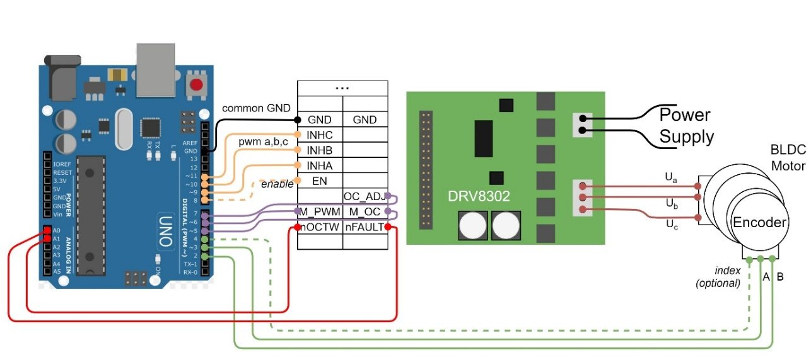

Overview
Field-oriented control is usually the domain of 32-bit MCUs and vendor toolchains. MyFOC implements the full stack on an 8-bit ATmega328P (Arduino UNO): forward and inverse Clarke/Park transforms, space-vector PWM with min–max common-mode injection, register-level 31.4 kHz phase-correct PWM on Timer1/Timer2, and ISR-based 4× quadrature decoding — all written from scratch so every equation in the thesis maps to a line of code.
On top of the core loop sit cascaded velocity and position controllers with anti-windup PID, an optional inner d/q current loop with cross-axis decoupling feed-forward, and an impedance/admittance mode that turns the motor into a programmable spring–damper — the basis of the rehabilitation application, where resistance adapts to the patient's effort.
Highlights
- Automated identification of all four PMSM electrical parameters (Rphase, Ld, Lq, λPM) plus IMC-based current-loop auto-tuning.
- Three-phase low-side current sensing with 3-PWM commutation on a TI DRV8302 gate driver.
- Impedance (virtual spring–damper) rehabilitation mode with effort-adaptive stiffness, validated on a pendulum rig.
- Safety ceilings on commanded current and torque, independent of the voltage limit.
- Ships as a proper Arduino library: umbrella header, three example sketches (diagnostics, motor ID, rehab device), a Python analysis script, and full design documentation.
- Five recorded test sessions — isokinetic tracking, adaptive-stiffness gating, and parameter-ID runs — included as raw serial logs.

Code & downloads
MyFOC lives in its own repository as an installable Arduino library, complete with examples, documentation, and the raw validation data.